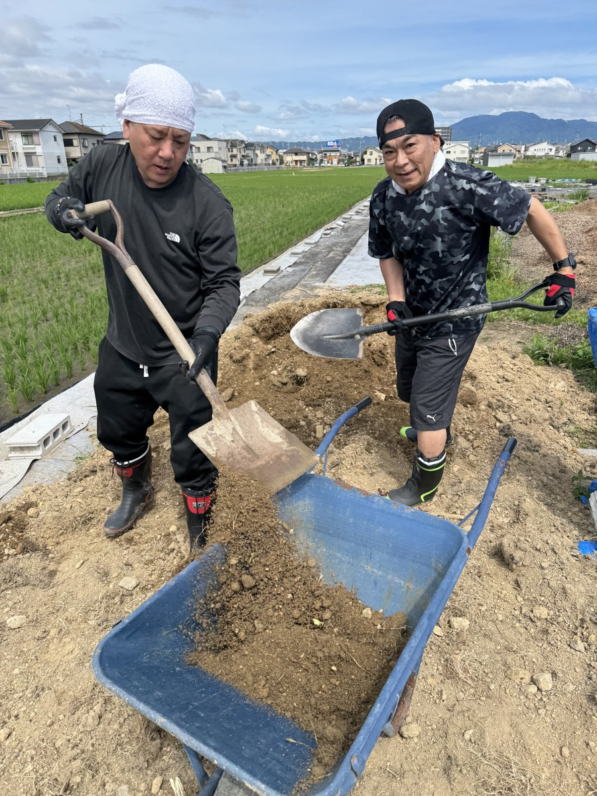

みんなで畑の環境を整えました
CASA SORAの畑で、排水・水はけ改善のための舗装工事を行いました。スコップを手に土を運び、みんなで汗を流した一日です。
梅雨の時期は雨が続き、畑の土が水を含みすぎてしまうことがあります。野菜が根腐れしないよう、また作業しやすい畑にするために、今回の工事に取り組みました。

土を運んで、道を整える
作業の中心は、土を掘り起こしてネコ車（一輪車）で運ぶこと。一見シンプルな作業ですが、重い土を何度も運ぶのはなかなかの重労働です。
それでも「ここをこうしたらいいんじゃないか」「もう少し平らにしよう」と声をかけ合いながら、チームワークで進めていきました。外の空気の中で体を動かす作業は、気持ちをすっきりさせてくれます。
🚧 今回の工事のポイント
- 畑の通路部分の土を整地・締め固め
- 水が流れやすいよう傾斜を調整
- ネコ車を使った土の運搬・移動
育てやすい畑に向けて
CASA SORAでは、入居者のみなさんと一緒に畑を育てています。野菜を植えて、水をやって、収穫するまでの一連の流れが、日々の生活にリズムと張り合いをもたらしてくれます。
今回の工事で畑の環境が整い、これからの季節にますます野菜が育ちやすくなるはずです。次の収穫が今からとても楽しみです🥦🍅